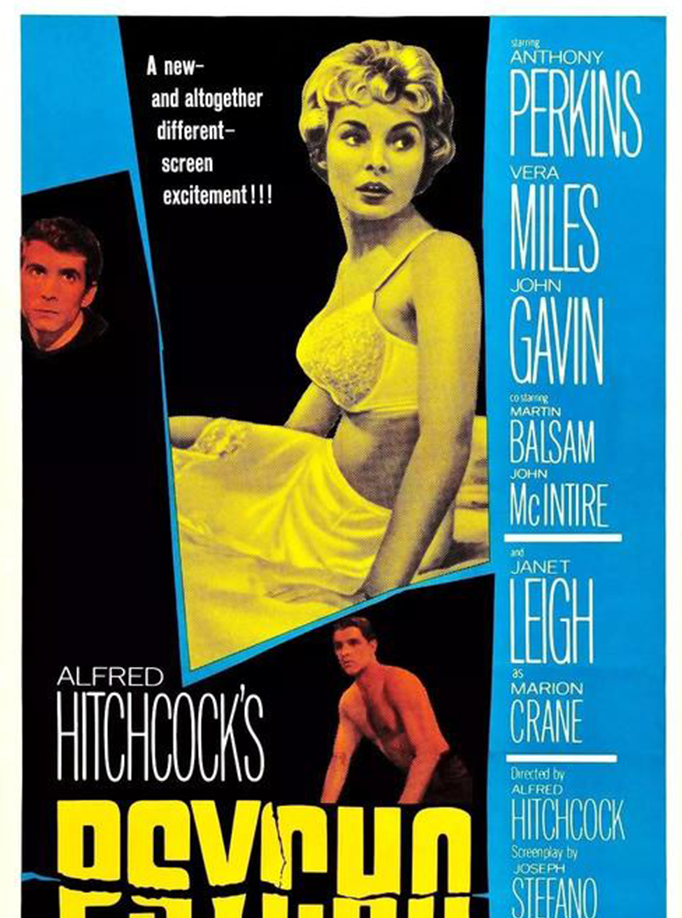
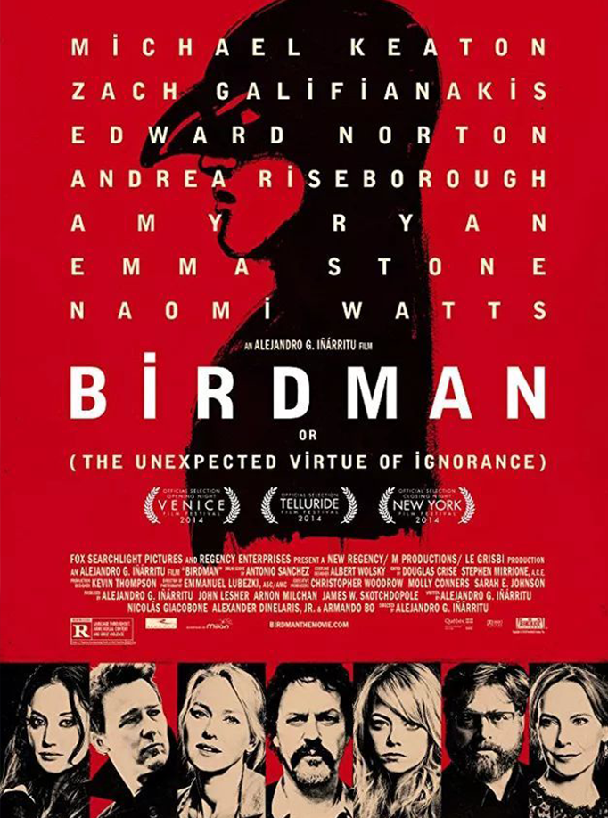

《惊魂记》是环球宇宙公司出品的惊悚片，由阿尔弗雷德·希区柯克执导，安东尼·博金斯、珍妮特·利等主演。
该片讲述了玛莉莲在浴室中被精神分裂的狂人杀死，之后玛莉莲的姐姐和男友加入警方的调查，在逐步侦查下终于揭露狂人杀人真相的故事。1960年6月16日，该片在美国上映。

《鸟人》（Birdman）是墨西哥导演亚利桑德罗·冈萨雷斯·伊纳里图执导的一部喜剧片，由迈克尔·基顿、艾玛·斯通、爱德华·诺顿主演，于2014年10月17日在美国上映。影片讲述一个过气的超级英雄演员，企图借百老汇咸鱼翻身的故事。
该片获得第87届奥斯卡金像奖最佳影片、最佳导演、最佳原创剧本、最佳摄影等四项大奖。
 《赛末点》是由导演伍迪·艾伦（Woody Allen）执导一部剧情片，斯嘉丽·约翰逊、艾米莉·莫迪默和乔纳森·莱斯·梅耶斯等联袂出演。影片率先于2005年5月12日在法国戛纳电影节放映。
《赛末点》是由导演伍迪·艾伦（Woody Allen）执导一部剧情片，斯嘉丽·约翰逊、艾米莉·莫迪默和乔纳森·莱斯·梅耶斯等联袂出演。影片率先于2005年5月12日在法国戛纳电影节放映。